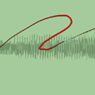
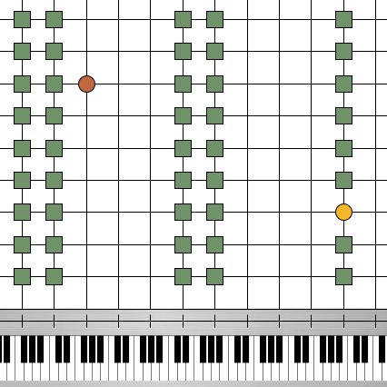
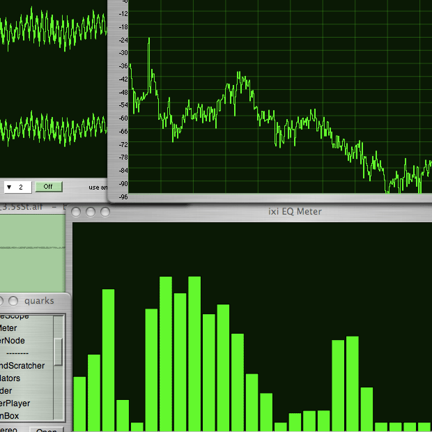

ixiQuarks - version 7
View screenshot | View demo videos | Description
|
||||||
Description
ixiQuarks is a software environment designed for live
improvisation that allows for user interaction on hardware, GUI and code
level. The environment enables innumerable setups with
flexible loading of tools and instruments. The ixiQuarks consist of different
types of tools: basic utilities, instruments, effects, filters, spectral effects and generators.

ixiQuarks can be downloaded as a standalone binary or as classes for for SuperCollider. (ixiQuarks are written in the SuperCollider programming language). For non-programmers, we recommend ixiQuarks, but for SuperCollider users, we simply recommend installing the ixiQuarks from the github repository.
Tools:
basic utilities: AudioIn, Recorder, Player, BufferPool, PoolManager, FreqScope, WaveScope, EQMeter, MixerNode, Amplifier, ChannelSplitter, TrigRecorder.instruments: SoundScratcher, StratoSampler, Raindrops, Slicer, Toshiomorpher, Soundsculptor, Mushrooms, Predators, Gridder, BufferPlayer, GrainBox, PolyMachine, Quanoon, ScaleSynth
audio effects: Delay, Freeverb, AdCVerb, Distortion, ixiReverb, Chorus, Octave, Tremolo, Equalizer, CombVocoder, RandomPanner, MRRoque, MultiDelay, Cyberpunk, Moog
filters: Bandpass, Lowpass, Highpass, Resonant Lowpass, Resonant Highpass, Resonant, Klanks
spectral: SpectralEQ, MagClip, MagSmear, MagShift, MagFreeze, RectComb, BinScramble, BinShift
generators: Noise, Oscillators
Find a more detailed description of ixiQuarks here
ixiQuarks is a free sofware with a GPL license